Crear un nuevo proyecto, agregar y modificar las propiedades de los controles necesarios para obtener una interfaz visual similar a la mostrada en la imagen.
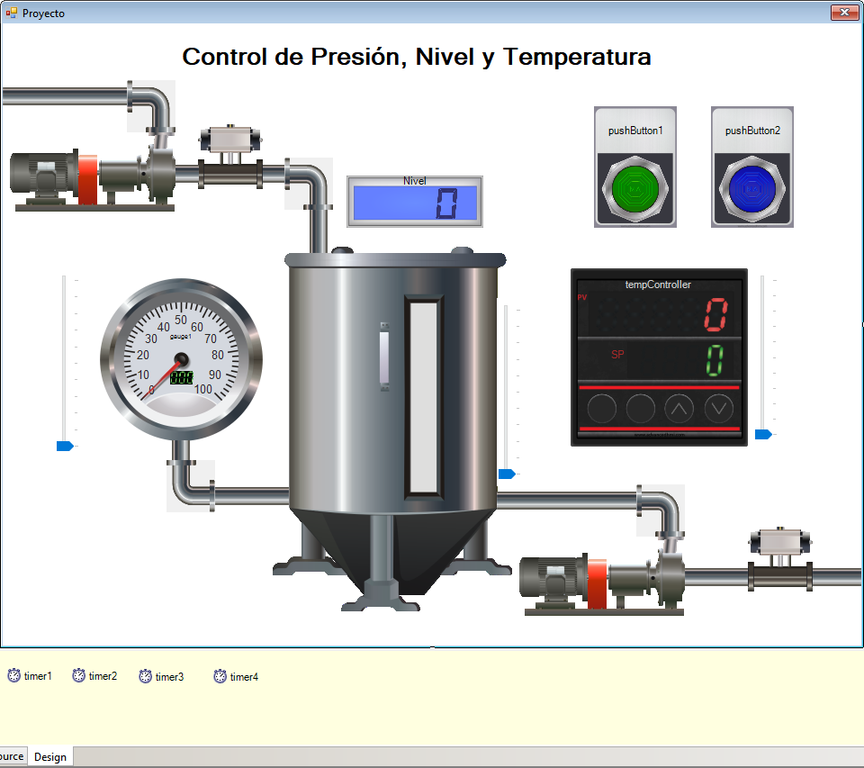
Sugerencia: probar modificando el valor de las propiedades y verificando si cambia el aspecto visual de los controles, por ejemplo, color y tamaño de texto.
Puede descargar la librería de controles y utilizarlas para diseñar esta interfaz:
https://drive.google.com/uc?id=1o19RIH7GxKLQsAuE4TOSZdqP4yhxpC-w&export=download&authuser=0
Nota: Copiar el archivo descargado MfgControl.AdvancedHMI.Controls.dll a la unidad C: \ del sistema.
Como instalar la librería de controles
Es posible que se requiera la re-configuración de la plataforma .NET para poder ejecutar la aplicación desarrollada con la librería de controles.
Añadiendo código a la aplicación
La configuración de la interface visual de la aplicación nos permite establecer el aspecto que tendrá el programa para el usuario final, pero detrás de ésta hay un código que define el “comportamiento” del programa, que es la manera en que procesa la información y controla cuando debe hacerlo.
Eventos
Un evento es un mensaje que envía un objeto cuando ocurre una acción. La acción podría ser causada por la interacción del usuario, como un clic del botón, o podría ser iniciado por otra lógica de programa, como cambiar un valor de propiedad.
El uso más habitual para los eventos se produce en las interfaces gráficas; normalmente, las clases que representan controles de la interfaz disponen de eventos que se notifican cuando el usuario hace algo con el control (por ejemplo, hacer clic en un botón).
El objeto que provoca el evento se conoce como emisor del evento. El evento normalmente es un miembro del emisor del evento; por ejemplo, el evento Click es un miembro de la clase Button.
Los eventos, sin embargo, no sólo se utilizan para interfaces gráficas. Los eventos proporcionan un medio apropiado para que los objetos puedan señalizar cambios de estado que pueden resultar útiles para los clientes de ese objeto. Los eventos constituyen unidades importantes para crear clases que se pueden reutilizar en diferentes programas.
En una aplicación de formularios Windows Forms en C# típica, se suscribe a eventos generados por controles como botones, cajas de texto y cuadros de lista. Puede utilizar el entorno de desarrollo integrado (IDE) de C# para examinar los eventos que publica un control y seleccionar los que desea controlar. El IDE agrega automáticamente un método de control de eventos vacío y el código para suscribirse al evento.
Para acceder a la lista de eventos de un control se debe seleccionar y hacer click en el ícono events de la ventana Properties.
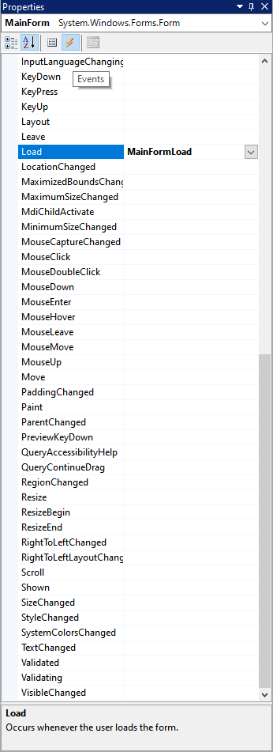
Cada objeto tiene múltiples eventos que se pueden programar individualmente para definir el comportamiento del programa ante una acción determinada. El evento Load ocurre cuando se ejecuta el programa y se despliega el objeto MainForm.
Programar el evento Load del objeto MainForm para establecer las configuraciones y estado inicial de algunas propiedades de los objetos ubicados en el proyecto:
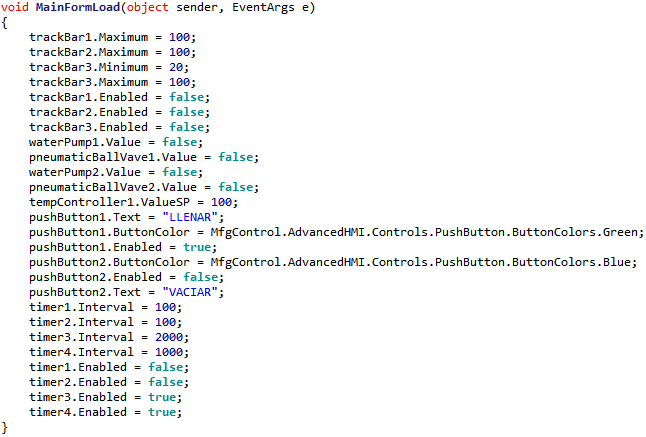
Como puede ver, el uso de los eventos es muy intuitivo. Para lograr que el programa se comporte tal y como usted desea, debe definir claramente cuando y como desea que ocurran las acciones de control sobre las variables y objetos.
El evento Click ocurre cuando el objeto pushButton detecta que se ha pulsado el botón izquierdo del mouse sobre él.
Para éste caso se ha programado que el control pushButton1 active waterPump1 y pneumaticValve1 y pushButton2 activará waterPump2 y pneumaticValve2, lo cual ejecutará una animación de cambio de color en estos objetos.
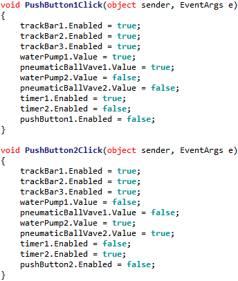
Continuando con nuestro proyecto, vamos a declarar las variables que almacenarán el valor numérico del estado del proceso.

Objeto Timer
El objeto Timer permite ejecutar tareas repetitivas en un intervalo de tiempo definido.
Para comprobar su funcionamiento vamos a desarrollar el código para establecer el valor de las variables del proceso en la aplicación.
Ubicar el objeto Timer en la ventana de proyecto.
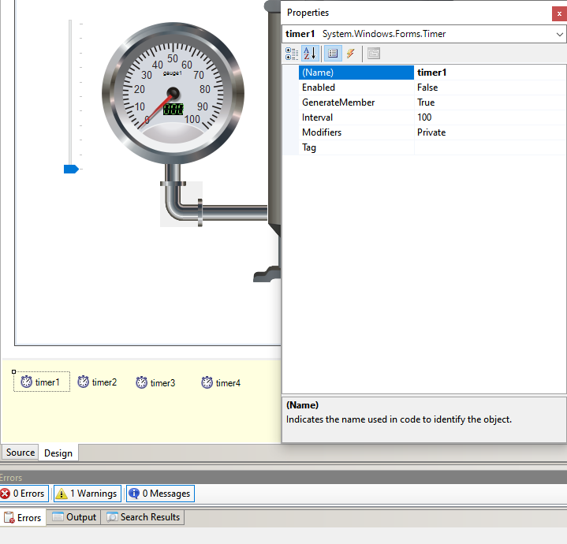
En las propiedades del control timer1 hallaremos la propiedad enabled que permite habilitar el evento de ocurrencia a intervalos regulares y la propiedad interval que permite definir el tiempo de intervalo en milisegundos (100 ms = 0,1 segundo)
El objeto timer1 se encargará de monitorear las variables durante el proceso de llenado del depósito y el proceso de vaciado corresponderá al objeto timer2.
La habilitación de estos objetos se programó en el evento Click de pushButton1 y pushButton2.
En el evento Tick del control timer1 escribiremos las instrucciones necesarias para asignar el valor de las variables al objeto corespondiente.
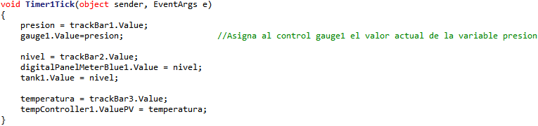
Estructura condicional if
Esta estructura permite la ejecución de una instrucción o de un bloque de instrucciones si se cumple una condición (El resultado es Falso o Verdadero). Generalmente se utilizan operaciones lógicas y relacionales para establecer el resultado de la condición.
Apliquemos su principio a nuestro proyecto.
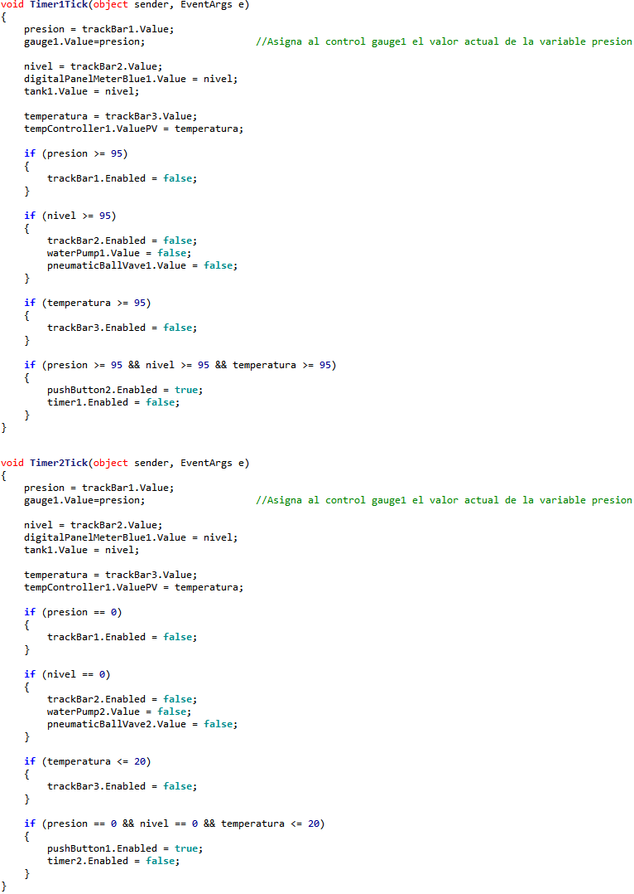
Proyecto en funcionamiento:
Sonidos
En ocasiones puede resultar útil reproducir sonidos en nuestra aplicación.
Adicionaremos a nuestro proyecto el código necesario para darle la capacidad de reproducir un sonido de alarma cuando el nivel llegue a un valor determinado.
Agregar las siguientes líneas:


Programar el evento Tick del objeto Timer3 con las siguientes líneas de código:

Descargar el archivo de sonido alarma.wav y copiar a la unidad D:\ del sistema
https://drive.google.com/uc?id=1UzDoCVI98DLq8IGNZjmozOFGFjPtA14J&export=download&authuser=0
Almacenar registro de variables en un archivo
Los sistemas de monitoreo por computador son aplicaciones de software diseñadas con la finalidad de controlar y supervisar procesos y permiten al usuario recolectar datos de una o más instalaciones distribuidas y/o enviar comandos y órdenes a estas instalaciones. Además, envían la información generada en el proceso productivo a diversos usuarios, tanto del mismo nivel como hacia otros supervisores dentro de la empresa, es decir, que permite la participación de otras áreas como, por ejemplo:
Control de calidad, supervisión, mantenimiento, etc.
Vamos a desarrollar la programación para que nuestra aplicación adquiera la característica de poder almacenar en un archivo el estado de las variables por intervalos de tiempo, de manera que se pueda verificar su comportamiento a través del tiempo.
Incluir los espacios System.IO y System.Text como muestra la imagen.

Programar el evento Tick del objeto Timer4 con las siguientes líneas de código:
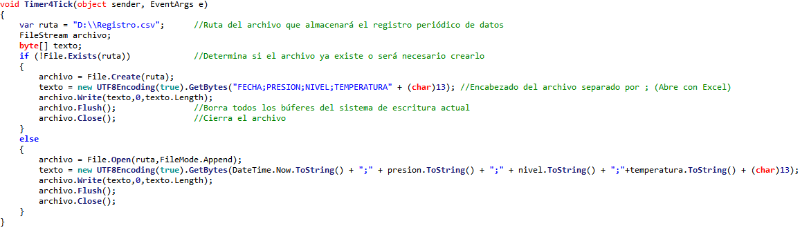
La instrucción crea un nuevo FileStream, que abre la conexión con el archivo especificado en el primer parámetro.
La Línea de datos a almacenar debe contener las variables en formato de cadena de texto separadas por punto y coma “;”, esto permite que cada dato se almacene en una celda diferente en el archivo.
El formato de archivo almacenado es CSV.
Los archivos CSV (del inglés comma-separated values) son un tipo de documento en formato abierto sencillo para representar datos en forma de tabla, en las que las columnas se separan por punto y coma.
Ejecutar el programa por un periodo de tiempo y después cerrarlo para verificar los datos almacenados.
Nota importante: El archivo de registro debe estar cerrado al momento de ejecutar la aplicación, ya que si está abierto nuestro programa no podrá escribir datos en él. La ruta donde se guardará el archivo es D:\Registro.csv
Al abrir nuevamente el archivo Registro.csv encontraremos los datos recolectados durante el lapso de tiempo que el programa estuvo ejecutándose.
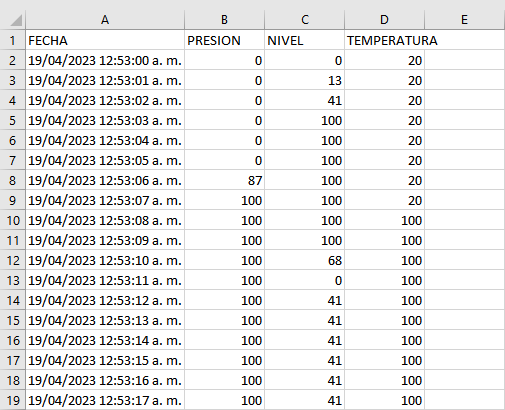
Crear una ventana Splash Screen
Una ventana Splash Screen es aquella que se despliega por unos segundos cuando se inicia un programa.
Para crear una ventana Splash Screen en nuestro proyecto, vamos a agregar un nuevo ítem como muestra la imagen:

Seleccionamos el ítem Form y le damos el nombre Splash Screen.cs

Agregamos un control Timer a la ventana Splash Screen:
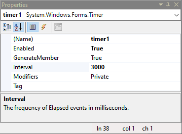
En las propiedades del control Timer habilitamos el control con la función enabled = true y definimos el intervalo de tiempo en milisegundos (3000ms = 3 segundos)
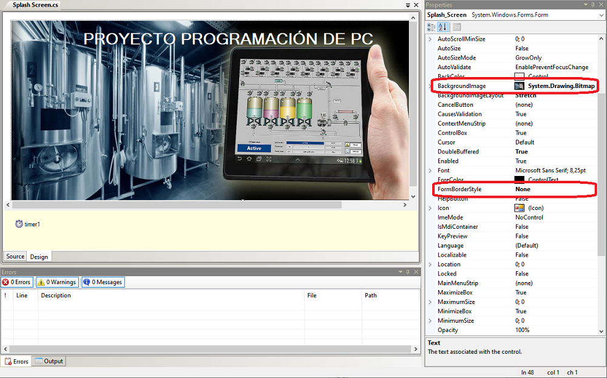
Podemos configurar el aspecto de la ventana de acuerdo con el proyecto desarrollado, definiendo imagen, color, texto, etc.
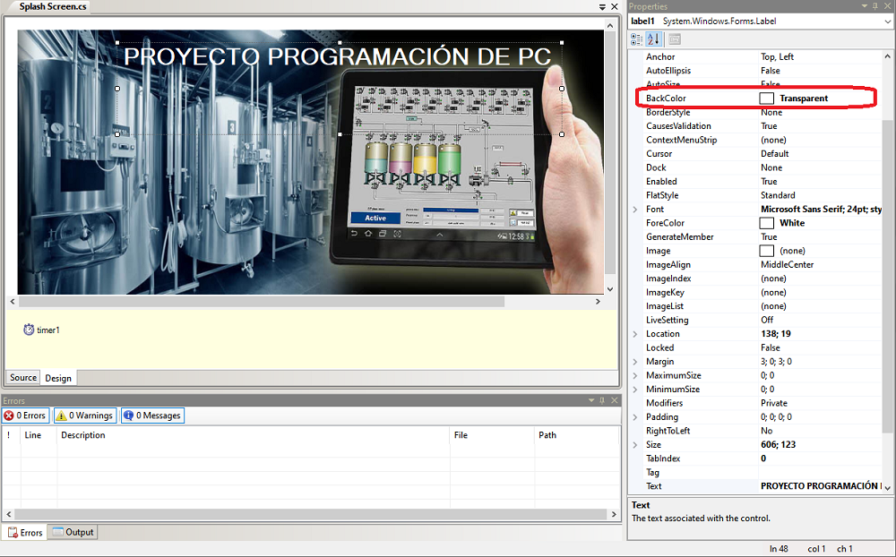
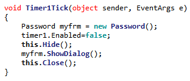
Finalmente, adicionamos código al evento Tick del control Timer1 para definir el comportamiento deseado (ocultar la ventana Splash Screen y mostrar la siguiente ventana cuando hayan transcurrido 3 segundos).
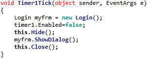
Hacer doble click en Program.cs, en el explorador de proyectos y nos aseguramos de que el objeto inicial del proyecto será la nueva ventana Splash Screen:

Podemos configurar una nueva ventana para cumplir la función de login de usuario:
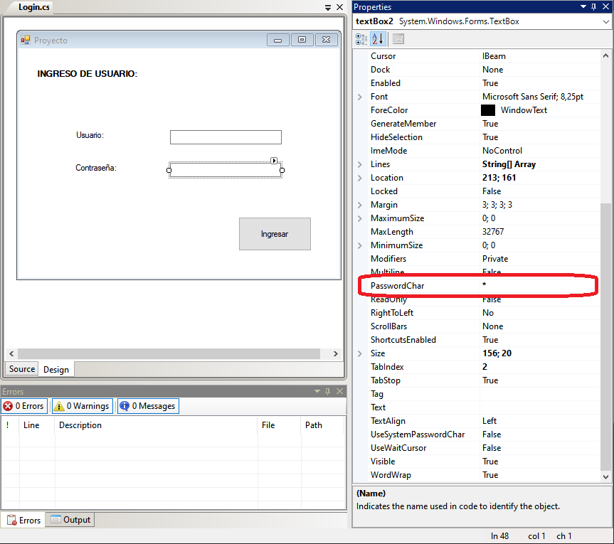
Para establecer si el usuario y contraseña ingresados son válidos vamos a programar el evento Click del control Button1
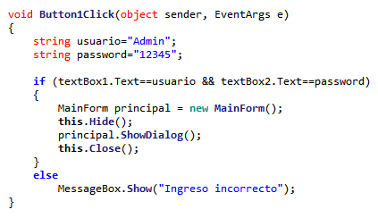
Cuando se ejecuta el evento Click del control Button1 y se comprueba que el usuario y la contraseña son válidos, nos lleva a una nueva ventana donde se verá la interface gráfica del proyecto.